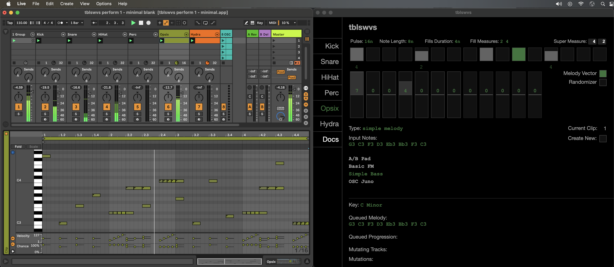

Tables & Waves
Epilogue: What Next & Parting Thoughts
A few closing thoughts on the software built in this tutorial.
Where to Go Next
The purpose of this tutorial is to get all the plumbing out of the way and build a foundation upon which you can do further creative coding. To that end, this tutorial is a distilled version of my own performance tool.
Feel free to poke around the repository for this codebase, tblswvs.app. It is steadily accruing features like:
- Key/scale settings
- Note probabilities
- Ratcheting/fills
- Vector melodies (shifting sequence notes by scale degrees)
- Melodic evolution/improvisation algorithms
- Swapping out the grid's button definitions by category (e.g., melodies vs. rhythm)
- "Pagination" within differnt grid interface functionality clusters
This version will look a little bit different since it is written in Typescript and has to be transpiled to JavaScript when the app build, but Typescript will still look close enough to plain old JavaScript that, if you can follow the tutorial code here, nothing should be too opaque.
Design Assumptions
This tutorial builds an Electron application from the ground up. The app is best described as triangulating the space somewhere between a step sequencer, a software UI/controller for computer music and a piece of middleware between the monome grid hardware and the Ableton Live digital audio workstation (DAW) software. Consequently, this software has intermediate complexity.
When software begins reaching a certain level of complexity, it is best if it starts to get a little opinionated and not try to be all things to all people. Here are some of those opinions and principles that impact its design:
1. Don't Reinvent Anything Ableton Does Well
First and foremost, Ableton Live is a great piece of software. I will never do better than a fully professional piece of software at implementing many of the core features of a sequencer or DAW. To that end, the first big design decision is that Live itself does all of the heavy lifting. Namely, it is responsible for providing the sequencer clock and timing. The Electron app, to the extent that it provides a parallel display of the sequencer while it is running, is a follower.
This also means that because Live is a stable and exceptional piece of software, I am leaning hard into its idioms and data model and APIs:
- Utilize the Track + Clip Slot model
- Utilize Max for Live and its Live Object Model (LOM) as the primary API
Embracing rather than fighting the framework, and with Live here being the framework or platform, means that all the other kind of functionality that a DAW provides that we take for granted, such as effects or return tracks, is already implemented.
Additionally, this means that the way in which Live is already an abstraction is maintained. By using Live's own MIDI clips, this Electron app does not force you to use either software or hardware instruments. Data is written at the clip slot level and working with Live's device model is left alone.
2. Create a Foundation for Creative Coding
Given the embrace-the-tools-that-exist nature of #1, this means that the Electron app can hone in on creative programming tasks. In my particular case, this tutorial aims to highlight a path through the annoying side of application development: all that stupid digital plumbing involved in wiring different components together through code.
However, once this digital plumbing is in place, the hope is that you see that it provides a foundation to build bespoke and idiosyncratic algorithms for processing musical data. The tutorial will demonstrate a few things in this space, but the point is to get the architecture in place that can be extended by individual creative coders, each in a completely unique manner.
3. Notes on JavaScript
One of the reasons this particular form of app development is not for everyone is because it is rooted in JavaScript. Contemporary JS development can be maddening to some. I get it. However, it is relatively easy to use. It is a traditional curly braces C-style programming language. The web is full of examples and documentation and communities where you can learn the language. That accessibility is worth a lot.
But also, given that it is the language used in the ubiquitous world of web browsers, there has been a lot of money thrown at it by major corporations and it is mature and phenomenally fast as a scripting language. While I don't personally believe in chasing optimization as the final arbiter of programming languages for creative coding, working in musical applications means you are working with time itself and reasonably good speed is nice to have. So let's bend the use of JS away from the capitalist coding of web consumerism and into creative spaces.
Additionally, in my opinion, JS has a lot of really great functional programming idioms (.map(), .reduce(), etc.) that are built into the language (i.e., supported) and embraced by the community (i.e., there's lots of examples). To the extent that I am writing code to process musical data, I nearly always find myself working with lists/collections/arrays of data and doing transformations and selections and mappings on those data structures. It's peanut butter + chocolate for me personally.
Finally, I get down with text-based code. I have been using other programming environments like Max/MSP, but I just like text-based code and the entire ecosystem around it. I like version control (at the statement level). I like testing frameworks. I can think in this type of code in ways I am not simply as fluent in visual idioms. That is just one perspective and not universal, but if you are comfortable with object-oriented computer code, check this tutorial out…
Acknowledgments & Inspiration
Nothing is built in a vacuum. I would like to express my gratitude and appreciation for a lot of prior work by generous people who have shared open source software and insights into their own work.
Monome Node.js Grid Studies: the Monome Team and Tom Dinchak and Tom Armitage. Thanks for a truly excellent introduction to programming for the grid with JavaScript and the node-serialosc package.
William Fields: I can't recommend enough that you listen to the interviews posted from his web page. His FieldsOS system using Lemur, Chromium and Reaper directly inspired this architecture using a monome grid, Electron and Ableton Live. I am also deeply indebted to Fields for sharing his thoughts on how to think about a long term relationship to one's own self-designed system.